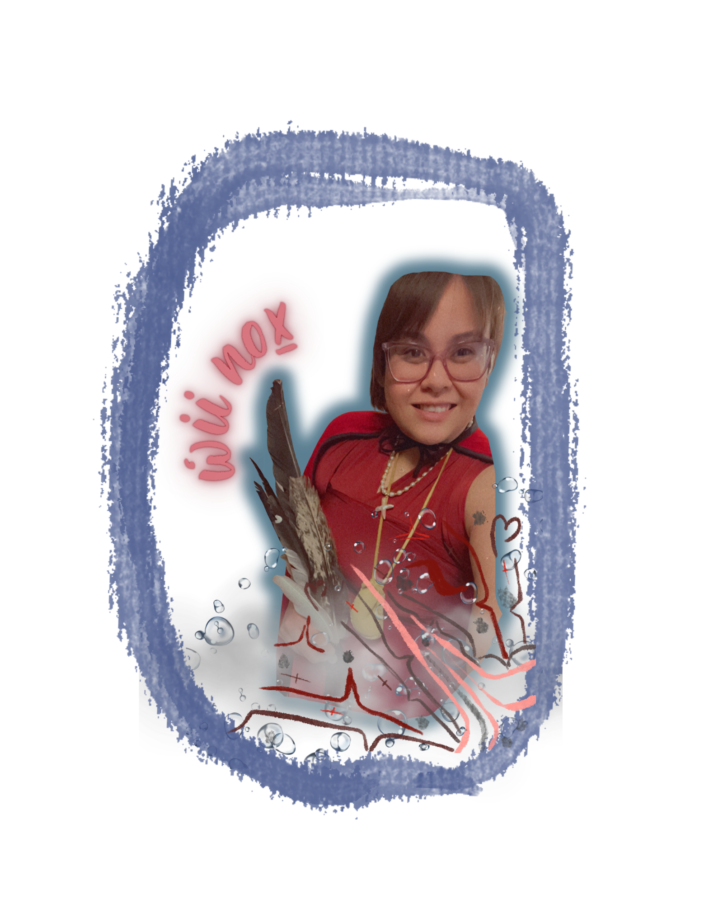

About
adaawaḵdi
(To tell a story)

Naa ńiinis?
(Who are you?)
Ẃii Noxhl waý ii
Ksim laxsgiik ńiiý
Wilps Sim'oogit Gwiix Ḿaaẃ wil witgwiý
Lheidli T'enneh wil jogaý
Nisga'a ńiiý
Hello, my name is Terra Barton, my Nisga'a name is Big Mama and I come from the Eagle tribe. The house I am from belongs to Chief Gwiix Ḿaaẃ. I live in the traditional territory of the Lheidli T'enneh First Nation, which is located in what is now known as Prince George, British Columbia. I am Nisga'a.
Terra Barton is a multidisciplinary creative whose work moves fluidly between technology, visual storytelling, and ancestral tradition. As a multimedia artist, graphic designer, illustrator, writer, and knowledge keeper, she creates work that is deeply personal while remaining accessible, vibrant, and rooted in community memory.